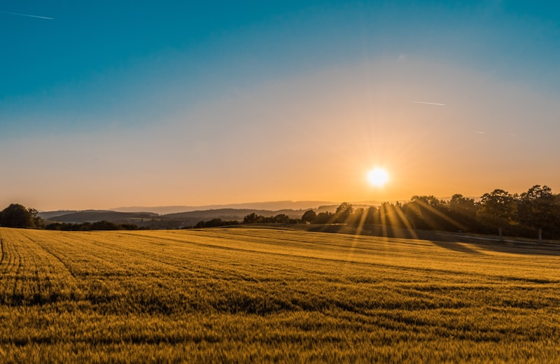
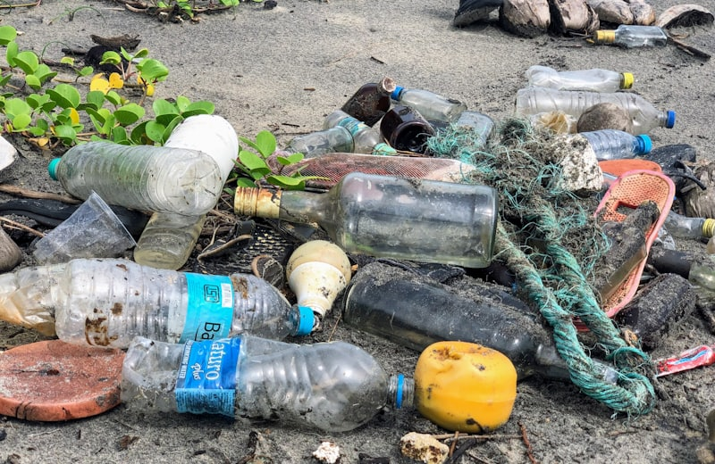

Alerta
Mudanças Climáticas
Fenômenos como o efeito estufa são naturais, mas a poluição humana está acelerando o aquecimento global, mudando o clima de todo o planeta.

O estudo do meio ambiente foca na forma como nós, seres humanos, interagimos com o mundo natural. Não se trata apenas de "salvar as árvores", mas de entender como a nossa economia, a nossa política e o nosso dia a dia dependem e transformam os recursos do planeta. No ENEM, o foco está em como podemos viver de forma mais equilibrada.

A busca pelo equilíbrio ecológico.
Fenômenos como o efeito estufa são naturais, mas a poluição humana está acelerando o aquecimento global, mudando o clima de todo o planeta.

As Unidades de Conservação e a proteção da biodiversidade são essenciais para manter os serviços que a natureza nos dá de graça, como água limpa e ar puro.

O descarte incorreto de lixo no solo, a contaminação da água por esgoto e das emissões de gases fatais no ar são problemas que afetam diretamente a nossa saúde.

Diferente do modelo tradicional onde "extraímos, usamos e jogamos fora", a economia circular propõe um sistema onde os resíduos viram recursos. O foco é manter os materiais em uso pelo maior tempo possível, fechando o ciclo e diminuindo a pressão sobre o meio ambiente.
Sem ele, a Terra seria gelada demais para a vida. Mas, ao queimarmos combustíveis fósseis, aumentamos a camada de gases que segura o calor, criando um aquecimento global perigoso.
O Sol envia radiação para a Terra.
Parte do calor é refletida de volta ao espaço.
Gases como CO2 "prendem" o excesso de calor na atmosfera.
Sempre devemos ter o Meio Ambiente como o arranjo indissociável das infraestruturas humanas e ecossistêmicas. Infelizmente a expansão urbana sem controle desordenada gerou pressões no solo (voçorocas, deslizamentos nas encostas ocupadas) e contaminação hídrica crônica. A preservação requer consciência de que a sustentabilidade significa usufruir perenemente e inteligentemente dos recursos sem extirpar as oportunidades das sucessivas gerações (Relatório Brundtland de 1987).
A preocupação com o meio ambiente ganhou força a partir da década de 1970, culminando na Conferência de Estocolmo (1972) e posteriormente na Eco-92, no Rio de Janeiro. Nesses encontros, cunhou-se o conceito de Desenvolvimento Sustentável, que defende o suprimento das necessidades da geração atual sem comprometer a capacidade de atender as gerações futuras.
Historicamente, o sistema de produção capitalista se baseou na exploração intensa dos recursos naturais, muitas vezes tratando-os como infinitos. A degradação dos solos, a poluição hídrica e a emissão de gases do Efeito Estufa colocam em risco o equilíbrio ecossistêmico global.
É vital distinguir os conceitos de Conservação e Preservação no debate ambiental. A Preservação refere-se à proteção integral da natureza, sem interferência humana direta (intocável). Já a Conservação admite o uso racional dos recursos, como no caso da extrativismo sustentável. No Enem, essas distinções são fundamentais para interpretar as legislações ambientais (como o Código Florestal) e os debates das COPs (Conferências das Partes).
Fonte: Baseado em publicações do Ministério do Meio Ambiente e artigos do Brasil Escola.
Disponível em: https://brasilescola.uol.com.br/geografia/meio-ambiente.htm